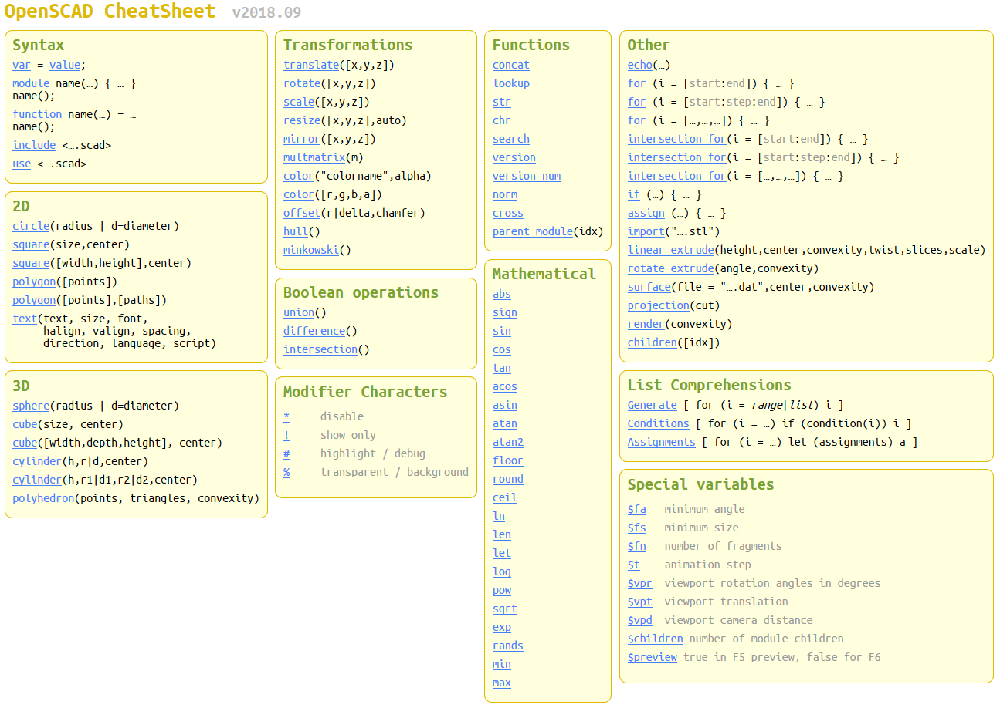

OpenSCAD Tutorial
Table of Contents
- Chapter 1: A few words about OpenSCAD and getting started with the first object
- Chapter 2: Scaling the model and first steps for parameterizing models
- Chapter 3: Resizing models and more ways of combining objects
- Chapter 4: Introducing modules to organize the code
- Chapter 5: Using multiple scripts and libraries
- Chapter 6: Control flow, conditional creation of objects
- Chapter 7: Loops and creating more complex patterns
- Chapter 8: Extruding 2D shapes into 3D objects
- Chapter 9: Math, calculations and low level geometry creation
OpenSCAD User Manual
Table of Contents
OpenSCAD Language Reference
Table of Contents
- The OpenSCAD Language - General
- 3D Objects, Projection
- 2D Objects, Primitives, Text, Extrusion to 3D
- Transformations
- Boolean operations
- Conditional and iterator functions
- Mathematical operators
- Mathematical functions
- String functions
- Type test functions
- List comprehensions
- Other language features
- User defined functions and modules
- Debugging aids - modifier characters
- Importing geometry, Exporting geometry
Cheat Sheet
Tutorials - Articles / Blogs

Image ©
CC-BY-NC 3.0 -
Jeremie Francois
How to use OpenSCAD
by Jeremie Francois, Sep - Nov 2014

3d-spielplatz.de – A guide to 3D-Design and -Printing using OpenSCAD written in German
by Harald Mühlhoff
Started Oct 2019

An OpenSCAD Tutorial Series on the Makerbot blog
by MakerBlock
2011-2013

OpenScad beginners tutorial at EduTechWiki
by Daniel K. Schneider
Mar 2010 - May 2012

Make: Projects - Simple 3D models with OpenSCAD
by Sean Michael Ragan
Dec 2009

I Heart Robotics: OpenSCAD
(archived page, original page is gone)